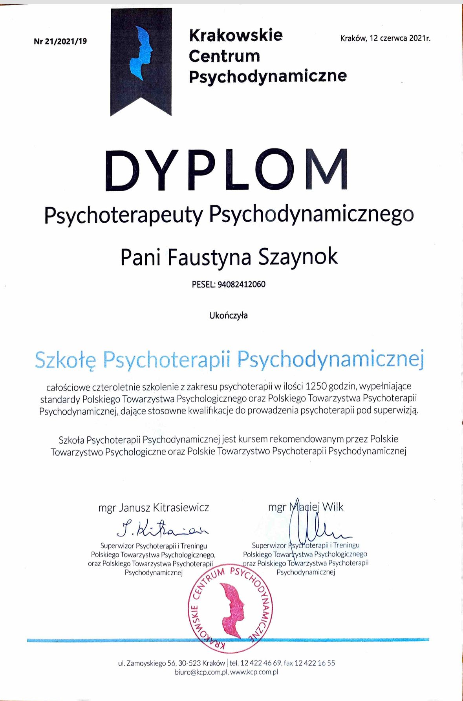

Psychoterapeuta i psycholog Wrocław — pomoc dla młodzieży i dorosłych
Gabinet psychoterapeutyczny w Wrocławiu. Terapia depresji, zaburzeń lękowych, zaburzeń osobowości i trudności w relacjach. Psychoterapia psychodynamiczna i TFP. Konsultacje dla dorosłych i młodzieży.
Wybierz dogodny termin i umów się na wizytę online.
PnWtŚrCzPtSbNd
Dane kontaktowe
Wypełnij formularz, a skontaktuję się z Tobą SMS-owo.
7+Lat doświadczenia
Psychoterapia
Diagnoza
Leczenie
Psychoterapeuta Wrocław — o mnie
Pracuję indywidualnie oraz grupowo z młodzieżą i dorosłymi. Jestem dyplomowaną psycholog i psychoterapeutką. Ukończyłam Uniwersytet SWPS we Wrocławiu na kierunku Psychologia kliniczna oraz całościowe 4-letnie szkolenie z psychoterapii w Krakowskim Centrum Psychodynamicznym, które posiada akredytację Polskiego Towarzystwa Psychologicznego. Jestem również absolwentką Studium Socjoterapii i Psychoterapii Młodzieży, które uprawnia do pracy grupowej z nastolatkami.
Pracowałam z pacjentami oddziału dziennego w Dolnośląskim Centrum Zdrowia Psychicznego. Doświadczenie w pracy z młodzieżą zdobywałam pracując w liceum i gimnazjum oraz prowadząc grupy socjoterapeutyczne dla nastolatków we wrocławskich fundacjach. Prowadziłam zajęcia ze studentami psychologii na Uniwersytecie Wrocławskim.
Aktywnie podnoszę swoje kwalifikacje uczestnicząc w licznych kursach i konferencjach. Swoją pracę poddaję regularnej superwizji indywidualnej i grupowej u certyfikowanych superwizorów Polskiego Towarzystwa Psychiatrycznego, Polskiego Towarzystwa Psychologicznego oraz Polskiego Towarzystwa Psychoterapii Psychodynamicznej. Jestem członkiem Polskiego Towarzystwa Psychoterapii Psychodynamicznej.
Jestem w trakcie specjalistycznego, dwuletniego szkolenia „Terapia Skoncentrowana na Przeniesieniu" (TFP). Jest to metoda leczenia zaburzeń osobowości, oparta o psychoanalityczną teorię Otto Kernberga.
W swojej pracy skupiam się na prowadzeniu psychoterapii w nurcie psychodynamicznym. Przed podjęciem pracy przykładam uwagę do dokładnego zdiagnozowania problemu pacjenta, aby wiedzieć jaka forma leczenia będzie najbardziej korzystna. Aby móc to robić współpracuję z innymi specjalistami, takimi jak psychiatrzy, psycholodzy diagności, socjoterapeuci w przypadku młodzieży oraz terapeuci pracujący w innych nurtach terapeutycznych.
Obszarem moich zainteresowań jest również praca grupowa (socjoterapeutyczna) z nastolatkami. W swojej pracy dostrzegam ogromną wartość płynącą z tej formy terapii, zwłaszcza dla młodzieży z problemami w relacjach z rówieśnikami. Grupa socjoterapeutyczna daje możliwość, w bezpiecznych warunkach, zmierzyć się z lękiem przed nawiązywaniem nowych relacji, podzielić się swoimi przeżyciami z innymi czy przepracować trudne, konfliktowe sytuacje przy wsparciu psychologów.
W swojej pracy oferuję pomoc osobom zmagającym się z objawami i trudnościami o podłożu emocjonalnym, takimi jak zaburzenia nastroju, zaburzenia osobowości, trudności w relacjach, przewlekły stres, zaburzenia psychosomatyczne czy brak satysfakcji w różnych obszarach życiowych.
Prowadzę psychoterapię indywidualną osób dorosłych i młodzieży od 15 roku życia. Gabinet mieści się przy ul. Benedykta Polaka 21/8 we Wrocławiu, obok Placu Grunwaldzkiego.
Dyplom ukończenia szkolenia z psychoterapii

Dyplom ukończenia całościowego szkolenia z psychoterapii — Krakowskie Centrum Psychodynamiczne (akredytacja PTP)
Jak przebiega proces psychoterapii?
Psychoterapia to proces prowadzony w jasny i uporządkowany sposób. Od początku wiesz, czego możesz się spodziewać, a tempo i kierunek pracy są dostosowane do Twoich potrzeb.
1
Pierwsze spotkanie
Poznajemy Twoją sytuację, trudności i to, z czym przychodzisz na terapię.
2
Ustalenie celu pracy
Wspólnie określamy, nad czym będziemy pracować i jaki kierunek będzie dla Ciebie najlepszy.
3
Regularne sesje
Podczas spotkań pracujemy nad emocjami, myślami i powtarzającymi się schematami.
4
Zmiana i utrwalenie
Stopniowo wprowadzasz zmiany i wzmacniasz efekty terapii — w swoim tempie, bez presji.
Oferta
01
Konsultacja diagnostyczna
Pierwsze 3–5 spotkań poświęcam na dokładne poznanie Twojej sytuacji. Zbieram informacje, które pozwalają mi postawić diagnozę i zaproponować najlepszą formę leczenia. Na końcu tego etapu omawiamy wspólnie plan dalszej pracy i ustalamy kontrakt terapeutyczny.
02
Terapia indywidualna dorosłych
Prowadzę psychoterapię dorosłych w nurcie psychodynamicznym. Pracuję z osobami zmagającymi się z depresją, zaburzeniami lękowymi, zaburzeniami osobowości, trudnościami w relacjach, przewlekłym stresem i zaburzeniami psychosomatycznymi. Specjalizuję się w Terapii Skoncentrowanej na Przeniesieniu (TFP) — metodzie opartej o teorię Otto Kernberga, szczególnie skutecznej w leczeniu zaburzeń osobowości.
03
Terapia nastolatków i młodych dorosłych
Pracuję z młodzieżą od 15 roku życia i młodymi dorosłymi, którzy przeżywają trudności emocjonalne, problemy z tożsamością, lęki, obniżony nastrój czy konflikty w relacjach z rówieśnikami i rodziną. Doświadczenie w pracy z tą grupą zdobywałam w liceum, gimnazjum oraz prowadząc grupy socjoterapeutyczne we wrocławskich fundacjach. Terapia dostosowana jest do etapu rozwoju i specyficznych potrzeb młodych osób.
Pierwsza wizyta u psychoterapeuty to konsultacja trwająca około 50 minut. Podczas spotkania rozmawiamy o powodach zgłoszenia, Twoich oczekiwaniach wobec terapii i ustalamy wstępny plan pracy. To też czas na pytania i poznanie mojego stylu pracy. Konsultacja nie zobowiązuje do kontynuowania terapii.
Sesje psychoterapii odbywają się zwykle raz w tygodniu, o stałej porze. W przypadku terapii TFP (terapii skoncentrowanej na przeniesieniu) zalecane są dwa spotkania tygodniowo. Częstotliwość sesji ustalamy indywidualnie, w zależności od rodzaju problemu i Twoich potrzeb.
Czas trwania psychoterapii zależy od problemu i celów. Terapia krótkoterminowa trwa od kilku do kilkunastu spotkań. Psychoterapia psychodynamiczna i TFP to procesy dłuższe, od kilku miesięcy do kilku lat.
Nie prowadzę terapii online. W swojej pracy cenię bezpośredni kontakt, który pozwala na pogłębienie procesu terapeutycznego i pracę z komunikacją niewerbalną — mimiką, postawą ciała, napięciem. Te elementy są istotną częścią terapii psychodynamicznej i TFP, dlatego wszystkie sesje odbywają się stacjonarnie w gabinecie we Wrocławiu.
Sesja kosztuje 200 zł. Prowadzę konsultacje psychoterapeutyczne (pierwsze spotkania diagnostyczne), a następnie — jeśli pacjent zdecyduje się na kontynuację — regularne sesje psychoterapeutyczne. Czas trwania jednego spotkania to 50 minut. Płatność przelewem.
Psycholog to osoba z dyplomem psychologii, która może prowadzić konsultacje i diagnozę. Psychoterapeuta to specjalista, który ukończył wieloletnie szkolenie z psychoterapii i pracuje pod superwizją. Psychoterapeuta prowadzi regularną terapię nastawioną na trwałą zmianę.
Warto zgłosić się do psychoterapeuty, gdy odczuwasz przewlekły smutek lub obniżony nastrój, masz problemy z lękiem lub atakami paniki, przeżywasz trudności w relacjach, zmagasz się z niską samooceną lub myślami samobójczymi. Im wcześniej szukasz pomocy, tym szybciej możesz poczuć się lepiej.
Tak, prowadzę psychoterapię nastolatków od 15 roku życia. Mam doświadczenie w pracy z młodzieżą zdobyte w szkołach, na oddziale dziennym i prowadząc grupy socjoterapeutyczne. Więcej informacji na stronie terapia nastolatków.
Gabinet mieści się przy ul. Benedykta Polaka 21/8 we Wrocławiu, obok Placu Grunwaldzkiego. Dojazd komunikacją miejską: tramwaje i autobusy na przystanek Plac Grunwaldzki.